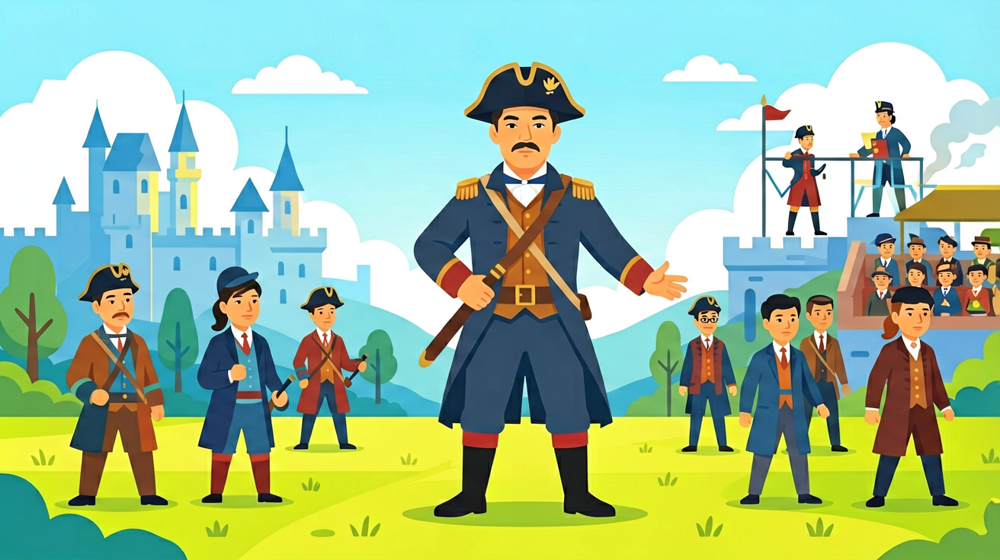
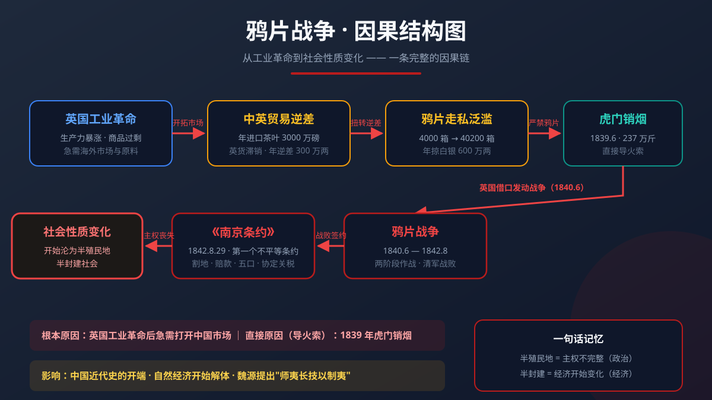
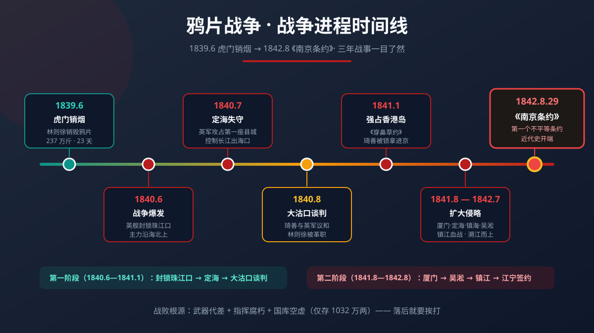

从虎门销烟到《南京条约》——看懂中国如何一步步沦为半殖民地半封建社会

❓ 为什么英国非要卖鸦片给中国？
❓ 林则徐虎门销烟到底对不对？
❓ 《南京条约》里哪条对中国伤害最大？
学完这一课，这些问题你都能自信地回答。
你听过林则徐虎门销烟的故事——1839年，他在虎门海滩当众销毁了237万斤鸦片，历时23天。这是中国人禁毒的壮举。
鸦片战争的根因真的是禁烟吗？为什么英国议会最终以271:262的微弱票数通过对华战争拨款？拥有4亿人口、80万军队的大清，为什么打不过远征而来、最多时也只有2万人的英军？
用史料 + 地图 + 数据，带你看懂鸦片战争的起因、经过与影响——理解"落后就要挨打"的历史教训，也理解林则徐"师夷长技以制夷"的远见。
3 道小题，帮你确认是否准备好了。答完会给出个性化学习建议。
鸦片战争爆发的直接原因（导火索）是什么？
中国近代史上第一个不平等条约《南京条约》签订于哪一年？
鸦片战争爆发前，中英正常贸易中中国处于什么地位？
要理解鸦片战争，必须先把时钟拨回19世纪初的英国。1760年代开始的工业革命，到19世纪30年代已在英国基本完成：曼彻斯特的棉纺织厂昼夜轰鸣，兰开夏的蒸汽机每年织出数以亿计码的棉布。生产力呈几何级数增长，带来的直接后果是——商品多到卖不出去。
英国资本家迫切需要新的市场来消化过剩产能，而拥有约4亿人口的中国，在他们眼中就是"世界上最大的潜在市场"。曼彻斯特商会曾公开宣称："中国3亿人每年消费1先令棉织品，就是1800万英镑的市场。"
然而，理想很丰满，现实很骨感。当时的中国是一个典型的自给自足的自然经济社会：男耕女织，一家一户就是一个完整的生产单位。农民自己种粮、自己纺纱织布，对洋布几乎没有需求。英国运来的羊毛织品、棉纺织品在广州滞销率超过40%，常常亏本甩卖。
与此同时，清政府实行闭关锁国政策：1757年起仅留广州一口通商，外商必须通过官方特许的"十三行"（公行）才能与中国贸易，且受到严格限制——不许外商随意进城、不许直接与中国商人交易、每年贸易季结束后必须离境。这道制度的高墙，把英国商品挡在了中国市场之外。
更要命的是贸易结构的不平衡。英国对中国的茶叶、生丝、瓷器需求巨大：19世纪初，英国每年从中国进口约3000万磅茶叶，茶叶税占英国政府关税收入的10%左右；而英国对华出口的工业品却卖不动。一来一往，英国每年对华贸易逆差高达300万两白银。白银像水一样从伦敦流向广州，英国东印度公司甚至要专门派船从美洲运银元来中国支付茶款。这种"只买不卖"的局面，是英国资本家绝对无法长期忍受的。
为了扭转贸易逆差，英国商人找到了一种"完美商品"——鸦片。鸦片产自英属印度（主要是孟加拉地区），由英国东印度公司垄断种植和拍卖。它的"优点"让英国商人欣喜若狂：成本低廉、便于运输、利润惊人，最关键的是——成瘾性。一旦吸食成瘾，吸食者会不惜倾家荡产持续购买，需求永远旺盛。
这条走私链条是这样运转的：东印度公司在印度把鸦片拍卖给英国私商（如怡和洋行、颠地洋行），私商把鸦片运到珠江口外的伶仃洋，停泊在武装趸船上；中国的鸦片贩子驾着小船（"快蟹""扒龙"）前来提货，再通过各种贿赂手段把鸦片运入内地，分销到各省烟馆。清政府虽然早在1729年就颁布了禁烟令，1800年更是明令禁止鸦片进口，但沿海官员层层受贿，禁令形同虚设。
数字最能说明问题：1820年，输入中国的鸦片约4000箱（每箱约100-120斤）；到1838年，这个数字暴增至40200箱，18年间翻了10倍。据不完全统计，鸦片战争前夕，全国吸食鸦片者已超过200万人——从达官贵人、八旗兵丁到贩夫走卒，甚至皇宫侍卫都有吸食者。鸦片贸易让英国对华贸易从逆差转为顺差：1839年以前，英国通过鸦片贸易每年从中国掠走白银约600万两，相当于清政府年财政收入的十分之一。
白银大量外流引发了严重的经济危机——"银贵钱贱"。清朝的货币体系是银钱并行：百姓日常交易用铜钱，纳税却要用白银。正常情况下1两白银兑换1000文铜钱，到1838年已涨到1600文以上。农民卖粮得到的是铜钱，交税时却要折成白银，实际税负凭空增加了60%以上。同时，军队中吸食鸦片成风，八旗、绿营兵丁"瘾君子"比比皆是，战斗力急剧下降。林则徐在奏折中痛陈：若听任鸦片泛滥，"是使数十年后，中原几无可以御敌之兵，且无可以充饷之银"——这就是著名的"银荒兵弱"危机。
面对鸦片之害，道光皇帝最终决定严禁。1838年12月，他任命湖广总督林则徐为钦差大臣，前往广东查禁鸦片。林则徐是当时清王朝中少有的实干派官员，他在湖广任内就曾成功推行禁烟，积累了丰富经验。1839年3月抵达广州后，他雷厉风行地采取了三项措施。
第一，勒令外国烟商限期交出全部鸦片，并出具甘结（保证书）声明"嗣后来船永不敢夹带鸦片，如有带来，一经查出，货尽没官，人即正法"；第二，整顿海防，招募水勇、购置西洋火炮，在珠江口增设炮台；第三，传讯受贿包庇走私的官员，斩断鸦片贸易的保护伞。
英国驻华商务监督义律起初抗拒，但在林则徐封锁商馆、断绝供应的压力下，最终被迫命令英商交出鸦片20283箱（含美商的1500余箱），共计237万余斤。1839年6月3日至25日，林则徐在虎门海滩当众销毁这批鸦片，历时23天。他采用的销毁方法极为科学——"海水浸化法"：先在海边挖两个大池，池底铺石板、四周钉板防渗漏，引入海水，把鸦片切碎投入池中浸泡半日，再投入生石灰。
生石灰遇水沸腾，鸦片随之分解，退潮时打开涵洞，让残渣随海水冲入大洋。这种方法比火烧法更彻底（火烧会让鸦片油渗入泥土，烟鬼可以掘土取烟），也避免了烟雾污染。销烟过程允许外国商人、传教士现场观看，美国传教士裨治文看完后感叹："我们反复检查销烟的每个环节，其细心和忠实程度，远超我们的想象。"
值得注意的是，林则徐并非盲目排外。他在禁烟的同时，组织翻译外国书报，编成《四洲志》（介绍世界五大洲30余国的地理、历史、政情），还派人翻译《澳门新闻纸》了解英国动态，委托美国医生伯驾编译《国际法》片段。他是清朝官员中第一个系统"开眼看世界"的人，后来魏源在《四洲志》基础上编成《海国图志》，提出"师夷长技以制夷"的著名主张。林则徐在奏折《筹议严禁鸦片章程折》中明确计算过"以中国有用之财，填海外无穷之壑"——虎门销烟是基于财政、军事考量的防御性措施，而非闭关锁国的延续。
然而，虎门销烟给了英国发动战争的借口。1839年10月，英国内阁决定出兵；1840年4月，英国议会经过激烈辩论，最终以271票对262票的微弱多数通过对华战争拨款。反对党领袖格莱斯顿在议会中痛斥："为鸦片贩子发动战争，将使英国国旗蒙上耻辱。"但工业资本家的游说力量最终占了上风。1840年6月，英国远征军舰队抵达广东海面，鸦片战争正式爆发。
同桌讨论 30 秒：如果没有虎门销烟，鸦片战争还会爆发吗？
A. 会，禁烟只是借口 ｜ B. 不会，禁烟是唯一原因
分析18-19世纪中英贸易结构变化如何导致战争


1840年6月，英国远征军总司令懿律（义律的堂兄）率领由16艘战舰、4艘蒸汽军舰、28艘运输船组成的舰队抵达广东海面，载有陆军约4000人。英军见林则徐在广东防守严密，便留下少数舰船封锁珠江口，主力沿海北上。7月，英军攻占浙江定海（今舟山）——定海总兵葛云飞率军抵抗，但因武器悬殊，县城半日即陷。定海是英军在中国攻占的第一座县城，他们计划以此为据点，长期控制长江出海口。
8月，英军舰队继续北上，抵达天津大沽口外，直逼京畿。道光皇帝大为震惊——他原以为"夷船"不过是在广东骚扰，没想到能直抵天津。英军向清政府递交了外交大臣帕默斯顿的照会，要求赔偿烟价、割让岛屿、开放口岸。
道光帝的态度开始动摇，他把战争归咎于林则徐"办理不善"，派直隶总督琦善前往大沽口与英军谈判。琦善向英军表示，只要舰队退回广东，一切好商量。英军考虑到北方冬季将至、补给困难，同意南返。道光帝随即以"误国病民"的罪名将林则徐革职查办，任命琦善为钦差大臣赴广州继续谈判。
1841年1月，谈判陷入僵局。义律为迫使琦善就范，突然进攻珠江口的沙角、大角炮台，守将陈连升父子壮烈殉国。随后义律单方面公布所谓的《穿鼻草约》，内容包括割让香港岛、赔款600万银元等。琦善不敢签字，但英军已强行占领了香港岛。道光帝得知后震怒，将琦善革职锁拿进京，派皇侄奕山为靖逆将军赴广东主持战事——谈判破裂，战争进入第二阶段。
1841年8月，英国政府召回义律，改派璞鼎查为全权代表，增派援军扩大战争。英军首先攻占厦门，随后再次攻占定海——这一次，定海三总兵葛云飞、郑国鸿、王锡朋率5000将士血战六昼夜，全部壮烈牺牲，史称"定海三忠"。接着英军攻占镇海、宁波，钦差大臣裕谦（蒙古族）兵败自杀，成为鸦片战争中殉国的最高级别官员。
1842年5月，英军放弃宁波，集中兵力北上进攻长江门户吴淞。江南提督陈化成已66岁高龄，他亲自登台指挥炮战，击伤英舰多艘，最终因援军不至、腹背受敌，与80余名守军一同战死。吴淞失陷后，上海、宝山相继沦陷。7月，英军溯长江而上，进攻镇江。镇江守军在副都统海龄率领下与英军展开惨烈巷战，1500名八旗官兵几乎全部战死，海龄自缢殉国。恩格斯在《英人对华的新远征》中评价镇江之战："如果这些侵略者到处都遭到同样的抵抗，他们绝对到不了南京。"
1842年8月初，英军舰队抵达江宁（南京）江面，炮口对准南京城。清政府彻底屈服，派耆英、伊里布为钦差大臣前往议和。8月29日，在英舰"康华丽号"（HMS Cornwallis）上，清政府代表与璞鼎查签订了中国近代史上第一个不平等条约——《南京条约》（又称《江宁条约》）。
💡 纵观两年战事，英军最多时兵力也不过2万人，且远渡重洋、补给线漫长；清军拥有80万常备军，却屡战屡败。原因不在于士兵不勇敢——定海三总兵、陈化成、镇江守军都战斗到了最后一刻——而在于武器装备的代差、指挥体系的腐朽、以及整个国家动员能力的落后。这正是"落后就要挨打"最直观的历史注脚。
| 对比项 | 清军 | 英军 |
|---|---|---|
| 主要火枪 | 鸟枪，射程约 100 米 | 伯克式燧发枪，射程 800 米 |
| 主力战舰 | 水师帆船，最大航速 7 节 | 蒸汽舰"复仇女神号"，逆风航速 10 节 |
| 火炮 | 吴淞炮台重炮射程 1200 米，射速 1发/3分钟 | 舰炮射程 900 米，射速 2发/分钟 |
| 指挥体系 | 缺乏统一指挥，各部配合不力 | 训练有素，指挥系统高效 |
英军的战舰装备了蒸汽机和重型火炮，机动性和火力都远超清军；清军则主要依靠传统的冷兵器和落后的火炮，海军力量几乎可以忽略不计。更致命的是财政：乾隆朝国库年盈余约1000万两，而道光朝因镇压白莲教起义耗银2亿两，战争爆发时国库仅存1032万两，连军费都难以支撑。
香港岛位于珠江口东侧，面积约80平方公里，水深港阔，是天然的优良港湾。
英国早在1830年代就觊觎此地，认为它是控制中国沿海贸易的战略支点。
割让香港岛，使中国的领土完整首次遭到破坏，也为英国在远东建立了一个永久的军事和贸易基地。
此后，香港逐步沦为英国对华经济侵略的桥头堡，直到1997年才回归祖国。
赔款分三部分：赔偿被销毁的鸦片烟价600万银元、英国军费1200万银元、偿还英商债务300万银元，合计2100万银元（约合当时1470万两白银），相当于清政府年财政收入的三分之一。
这笔巨款分四年付清，清政府只能把负担转嫁给百姓，田赋附加税激增。
湖南漕粮从1826年每石1两涨至1843年3两，直接加剧了社会矛盾。
五处口岸全部位于东南沿海，从南到北一字排开，恰好覆盖了中国最富庶的沿海地区。通商口岸的开放，打破了广州十三行垄断外贸的格局，外国商品可以长驱直入。尤其值得注意的是上海——开埠前它只是一个县城，开埠后凭借长江入海口的区位优势迅速崛起，十年后外贸额就超过广州，成为近代中国第一大商埠。
条约规定英商"应纳进口、出口货税、饷费，均宜秉公议定则例"——中国海关税率必须与英国协商确定，中国失去了自主制定关税的权力。1843年签订的《五口通商章程》将主要进口货物税率压至5%左右（原粤海关税率为16%-40%）。关税是一个主权国家保护本国经济的重要屏障，协定关税让外国商品以极低成本涌入中国市场，中国民族手工业从此难以与之竞争。
条约废除了广州十三行的垄断地位，允许英商在通商口岸自由与中国商人贸易，不受公行限制。同时规定中英两国官员"文书往来用照会字样"，形式上平等往来——这打破了清朝"天朝上国"的外交体制。
💡 这就像被迫签下一份不公平合同：对方不仅拿走了你家的地（香港岛）、要你赔钱（2100万银元），还规定以后进你家门不用打招呼（五口通商）、进门费由他说了算（协定关税）。每一条都在侵蚀中国的主权。
《南京条约》只是开始。1843年，英国又强迫清政府签订了《五口通商章程》和《虎门条约》（《五口通商附粘善后条款》），从中攫取了三项重要特权：
英国的"成功"刺激了其他列强。1844年，美国强迫清政府签订中美《望厦条约》，法国强迫签订中法《黄埔条约》。这两个条约不仅获得了英国在《南京条约》中的全部特权，还各有扩大：美国取得了在通商口岸建立医院、教堂和墓地的权利，以及美国兵舰可以到中国各港口"巡查贸易"的特权；法国则取得了在通商口岸自由传教的权利——这为后来西方传教士大量涌入中国打开了大门。从此，中国的大门被彻底打开，列强蜂拥而至。
鸦片战争前，中国是一个独立的封建国家：政治上，清政府拥有完整的主权，独立自主地处理内政外交；经济上，自给自足的自然经济占主导地位。鸦片战争后，这两个方面都发生了根本变化，中国社会开始沦为半殖民地半封建社会。这是本课最重要的概念，我们逐词拆解：
"半殖民地"指国家主权遭到严重破坏，但名义上仍保持独立。鸦片战争后：中国的领土主权被破坏（割让香港岛）；关税主权被破坏（协定关税，税率压至5%）；司法主权被破坏（领事裁判权）；贸易主权被破坏（五口通商、废除公行）。但中国没有像印度那样完全沦为英国的殖民地——清政府依然存在，名义上仍是独立国家。这种"主权不完整但形式独立"的状态，就叫半殖民地。
"半封建"指自然经济开始解体，但封建经济仍占主导。五口通商后，外国商品大量涌入：洋纱、洋布以其低廉的价格冲击中国传统的手工纺织业，东南沿海地区的家庭棉纺织业开始衰败，"纺"与"织"分离、"耕"与"织"分离——这就是自然经济开始解体的标志。同时，中国被卷入资本主义世界市场：茶叶、生丝等农产品大量出口，服从于国际市场的需要。但在广大内地和农村，封建土地所有制和自给自足的小农经济依然根深蒂固。这种"资本主义因素出现但封建经济仍为主体"的状态，就叫半封建。
💡 一句话记忆：半殖民地 = 主权不完整（政治层面），半封建 = 经济开始变化（经济层面）。两者结合，就是鸦片战争后中国社会的性质。
《南京条约》赔款2100万银元相当于清政府年收入1/3，这笔巨款不会凭空消失——清政府只能向百姓加税。
田赋附加税激增，湖南漕粮从1826年每石1两涨至1843年3两，广西、广东等地的赋税也大幅加重。
与此同时，鸦片输入在战后不减反增：1840年代后期，年输入量恢复到4万箱以上，白银继续外流，银贵钱贱进一步恶化，百姓的实际税负越来越重。
战争赔款、鸦片泛滥、官吏腐败三重压力叠加，社会矛盾急剧激化。1840年代，全国各地农民起义此起彼伏；1851年，太平天国运动在广西金田村爆发，席卷半个中国，持续14年之久。这种"战争→赔款→盘剥→起义"的恶性循环，正是封建社会解体的深层机制——鸦片战争不仅打垮了清朝的国防，也动摇了它的统治根基。
中国封建社会到1840年鸦片战争爆发后逐步解体——这正是课标要求我们理解的核心要点。从此，中国社会的主要矛盾由地主阶级和农民阶级的矛盾，转变为外国资本主义和中华民族的矛盾、封建主义和人民大众的矛盾；中国人民从此肩负起反对外国侵略、反对本国封建统治的双重革命任务。
鸦片战争的惨败，也惊醒了少数有识之士。林则徐在广东禁烟期间，就组织翻译外国书报，编成《四洲志》，成为近代中国"开眼看世界"的第一人。1843年，他的好友魏源在《四洲志》基础上编成《海国图志》50卷（后扩充至100卷），系统介绍世界各国的地理、历史、政治和先进技术，并明确提出了"师夷长技以制夷"的主张——学习西方的先进技术（战舰、火器、养兵练兵之法），用来抵抗西方的侵略。
这一主张在当时是石破天惊的。要知道，清朝士大夫长期以"天朝上国"自居，视西方科技为"奇技淫巧"。魏源敢于承认"夷"有"长技"可学，本身就是思想上的巨大突破。遗憾的是，《海国图志》在国内仅刊行千余册，清廷并未采纳其主张；但1851年传入日本后，却掀起"开国论"热潮，再版15次，间接推动了明治维新。直到20年后的1860年代，曾国藩、李鸿章等人才在第二次鸦片战争的再次惨败中幡然醒悟，发起洋务运动，把"师夷长技"付诸实践。
从更广泛的角度看，鸦片战争是西方列强全球扩张的一部分，反映了19世纪帝国主义对亚洲的侵略和掠夺。它标志着中国从封建社会向半殖民地半封建社会的转变，是中国近代史的开端——中国历史从此进入了一个充满屈辱、抗争与探索的新时期。
底图为全球彩色地形渲染图，灰色轮廓为清代疆域。红色线为第一次战役路线（1840），金色线为第二次战役路线（1841-42）。点击 12 个地标查看 80-150 字讲解。
按时间顺序，在地图上依次点击 4 个关键地点的标记（或点击下方按钮），每点一处回答一道"指挥官决策题"。完成 4 步，看你能不能把历史"推演"明白。
把卡片拖到核心概念 / 方法技能 / 应用情境 / 常见误区。
拖完 4 项后自动判分。
解释题：请结合课标要点，用2–3句话解释你如何理解「鸦片战争」，并举一个应用例子。
拓展题：关于鸦片战争，你曾犯过什么错误？后来怎样改正？
1. 错误认为"林则徐是盲目排外"：部分学生将虎门销烟简单理解为盲目排外，源于对当时白银外流数据的忽视。
实际上1839年前英国通过鸦片贸易年掠走中国白银约600万两（占清政府年收入1/10），林则徐奏折中明确计算过"以中国有用之财，填海外无穷之壑"。
正确理解应结合《筹议严禁鸦片章程折》中"银荒兵弱"的危机意识，这是基于财政军事考量的防御性措施。
2. 混淆战争根本原因与导火索：常有学生将"销毁鸦片"当作战争根本原因，实则是混淆了直接诱因与深层矛盾。
1840年英国议会辩论记录显示，反对党领袖格莱斯顿明确反对"为鸦片贩子发动战争"，但最终271:262票的微弱差距通过战费拨款，反映本质是英国工业革命后对中国市场（棉纺织品滞销率超40%）和原料产地的需求。
正确分析需结合马戛尔尼使团1793年访华失败后英国商人的长期游说。
3. 高估《南京条约》的"五口通商"条款：学生常把开放五个口岸（广州、厦门、福州、宁波、上海）视为平等互惠，忽略条约补充章程《五口通商附粘善后条款》的关键细节。
其中第8款规定英商"应纳进口、出口货税、饷费，均宜秉公议定则例"，实际剥夺中国关税自主权。
1843年协定关税税率压至5%左右（原粤海关税率为16-40%），这是理解半殖民地化的关键数据。
4. 误解"半殖民地半封建"的含义："半殖民地"不是指一半国土被占领，而是指国家主权（领土、关税、司法、贸易）遭到严重破坏但名义上保持独立；
"半封建"不是指一半时间是封建社会，而是指自然经济开始解体、资本主义因素出现，但封建经济仍占主导地位。
两个"半"描述的都是性质和程度，不是数量和范围。
1. 国际法中的"最惠国待遇"溯源：现代WTO贸易谈判常涉及的最惠国待遇原则，其不平等起源可溯至《虎门条约》第8款"设将来大皇帝有新恩施及各国，亦应准英人一体均沾"。
2021年中美贸易战中，美国依据1974年贸易法301条款对华加征关税时，中国学者曾援引鸦片战争关税案例，论证单边税则调整权对国家主权的重要性。
2. 禁毒宣传中的历史参照：2023年公安部"清源断流"专项行动展示的毒品检测技术（如拉曼光谱快速检测），常与林则徐"鸦片配方案例库"对比。
当年清政府在广州设立的"烟犯自首登记处"，建立2.5万份成瘾者档案（含职业、吸食量、戒断症状），这种早期数据治理思维现被应用于吸毒人员网格化管理系统。
3. 海关文物科技鉴定：2022年厦门海关在X光机检查中发现"西洋古董钟"内藏鸦片膏，其走私手法与1840年代英国商船"阿克巴号"（用茶叶箱夹层运鸦片）如出一辙。现代CT三维成像技术还原的毒品藏匿方式，与当年林则徐发明的"蒸茶验土法"（蒸压茶叶检验鸦片）形成技术史对照。
1. 如果鸦片战争发生在康乾盛世时期，结果会不同吗？
从军事技术代差来看，英军1840年已装备射程800米的伯克式燧发枪（清军鸟枪射程仅100米），但更关键的是财政制度：乾隆朝国库年盈余约1000万两，而道光朝因镇压白莲教起义耗银2亿两，国库空虚至战争爆发时仅存1032万两。
可对比分析1759年清军平定准噶尔时的后勤能力与1842年镇江战役的粮饷短缺。
2. 为何林则徐的"师夷长技"主张未被采纳？
不要简单归因于保守派反对，需注意林则徐1839年组织翻译的《澳门新闻纸》中，对英国议会制度的报道触犯禁忌。
他委托伯驾编译的《国际法》手稿因提及"主权平等"概念，比总理衙门成立早20年。
思考知识传播速度与体制接受度的关系：魏源《海国图志》1843年出版后在国内仅刊行千册，1851年传入日本却掀起"开国论"热潮并再版15次。
先要理解19世纪初的全球贸易失衡：英国从中国年进口3000万磅茶叶（占其关税收入10%），但对华出口的羊毛织品滞销，导致每年逆差300万两白银。
接着看鸦片贸易的恶性循环：英属印度鸦片产量从1820年4000箱暴增至1838年40200箱，中国吸食者超200万人。
当林则徐采取"鸦片入官即毁"的强硬措施时，英国纺织资本家在曼彻斯特商会宣称"中国3亿人每年消费1先令棉织品，就是1800万英镑市场"。
战争进程暴露军事代差：英军蒸汽舰"复仇女神号"逆风航速10节，清军水师帆船最大航速仅7节；
吴淞炮台重炮射程1200米但射速1发/3分钟，英舰炮射程虽900米但射速达2发/分钟。
最后《南京条约》的连锁反应：赔款2100万银元相当于清政府年收入1/3，导致田赋附加税激增，湖南漕粮从1826年每石1两涨至1843年3两，成为太平天国运动的诱因之一。
这种"战争-赔款-盘剥-起义"的恶性循环，才是封建社会解体的深层机制。
先独立作答，再点选项查看对错与错因。
林则徐虎门销烟的直接目的是
《南京条约》中对中国经济影响最深远的是
英国发动鸦片战争的本质动机是
1839年____在虎门海滩当众销毁缴获的鸦片
答案：林则徐
历史事件的关键人物记忆
鸦片战争后签订的____是中国近代第一个不平等条约
答案：《南京条约》
标志中国开始沦为半殖民地
3 道题检验你的掌握情况，答完会生成学习报告。
鸦片战争爆发的根本原因是什么？
下列哪一项不属于《南京条约》的内容？
鸦片战争对中国社会性质产生的最主要影响是什么？
✅ 战争根本原因是英国蓄谋打开中国市场
💡 混淆直接原因与根本原因
✅ 割香港岛破坏领土完整，五口通商丧失贸易主权
💡 忽视条约系统性危害
⚠️ 易错提醒：林则徐不是盲目排外——他组织翻译《四洲志》《澳门新闻纸》，提出"师夷长技以制夷"。虎门销烟是基于"银荒兵弱"财政军事考量的防御性措施，不是闭关锁国的延续。
🚀 迁移任务：设计一个表格，对比鸦片战争中中英两国的军事力量，并分析其对战争结果的影响。
口诀：白银外流国门破，条约签订主权落
类比：像强行撬开防盗门推销劣质商品，还逼你签不平等合同
复制提示词到 AI 学伴，生成「鸦片战争」的时间轴或事件提纲；也可以上传你手绘的示意图，请 AI 学伴点评。
复制后可粘贴到 AI 学伴继续对话。